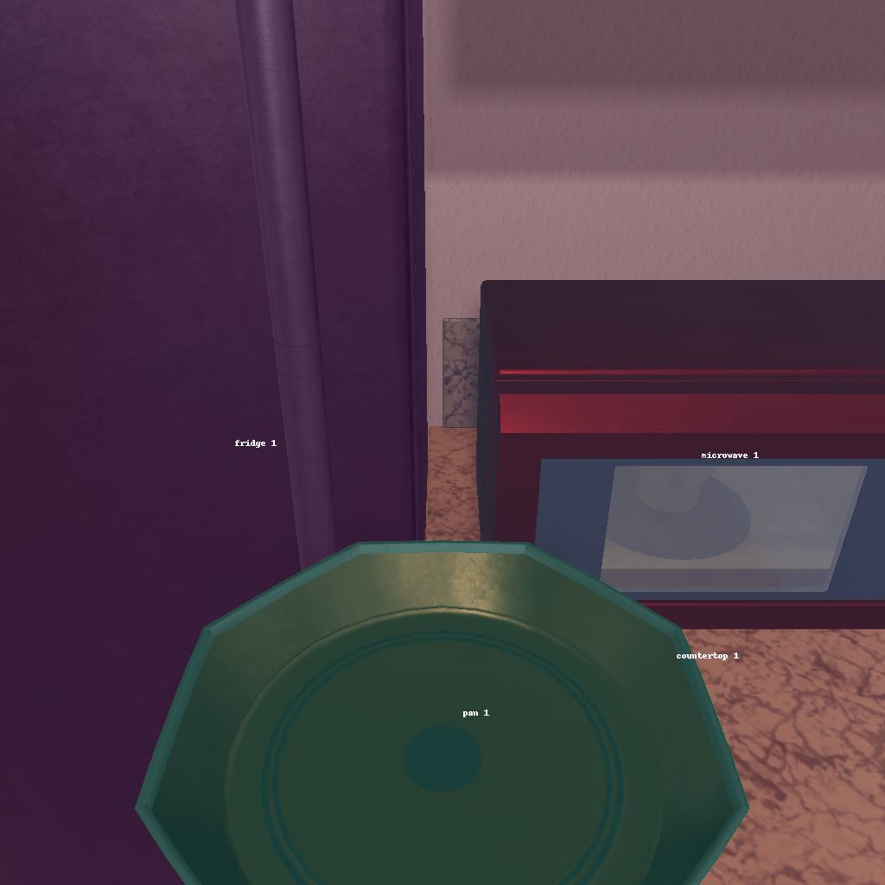

---------------------------------------------------------task: 18---------------------------------------------------------
--------------------------------------------------------------------------------------------------------------------------------------------------------------------
--------------------------------------------------------------------------------------------------------------------------------------------------------------------
Step:--------------------------------------------------------------------------19-------------------------------------------------------------------------------
----------------------------------------
VLM Prompt:
Image1:
**Instruction**
1. Analyze the provided image to identify all visible household objects, focusing on those relevant to the task description "cool some pot and put it in cabinet."
2. Use the analysis of the image and the task hint "The agent must find an object of the desired type, pick it up, go to a fridge, cool the object with the fridge, then find the correct location to place it, and put it down there. The agent does not need to use the fridge button or open the fridge to cool the object, and the agent just needs to do action that is "cool the object with the fridge"." to answer the question: what is the most reasonable action in the choices for the task description "cool some pot and put it in cabinet"?
4. Decide and write the answer using the template: The answer is: (i): , where i is the real number. If there is no desired object in the image, search every place based on **Initial Observation** to find the object. And if no one is exactly correct, choose a similar answer.
**Initial Observation**
You are in the middle of a room. Looking quickly around you, you can see cabinet (1-20), countertop (1-3), coffeemachine (1), toaster (1), sink (1), fridge (1), microwave (1), garbagecan (1), drawer (1-3), sinkbasin (1), stoveburner (1-4), shelf (1-3)
**Answer Choices**
(1): go to cabinet 1
(2): go to cabinet 2
(3): go to cabinet 3
(4): go to cabinet 4
(5): go to cabinet 5
(6): go to cabinet 6
(7): go to countertop 1
(8): go to coffeemachine 1
(9): go to cabinet 7
(10): go to toaster 1
(11): go to cabinet 8
(12): go to sink 1
(13): go to microwave 1
(14): go to garbagecan 1
(15): go to cabinet 9
(16): go to cabinet 10
(17): go to countertop 2
(18): go to cabinet 11
(19): go to cabinet 12
(20): go to drawer 1
(21): go to countertop 3
(22): go to drawer 2
(23): go to cabinet 13
(24): go to sinkbasin 1
(25): go to cabinet 14
(26): go to drawer 3
(27): go to stoveburner 1
(28): go to stoveburner 2
(29): go to stoveburner 3
(30): go to cabinet 15
(31): go to stoveburner 4
(32): go to cabinet 16
(33): go to cabinet 17
(34): go to cabinet 18
(35): go to cabinet 19
(36): go to cabinet 20
(37): go to shelf 1
(38): go to shelf 2
(39): go to shelf 3
(40): open fridge 1
(41): close fridge 1
(42): examine pan 1
(43): examine fridge 1
**Answer**
Let's think step by step by following the instructions.
----------------------------------------
----------------------------------------
Original Response:
First, we need to find an object of the desired type, which in this case is a "pot." However, upon analyzing the image, we do not see a pot; instead, we see a "pan 1." This pan could be considered similar to a pot for the purpose of the task, as they are both cooking vessels. Therefore, we will proceed with the pan as the object.
Next, we need to cool the object with the fridge. The task hint specifies that the agent does not need to use the fridge button or open the fridge to cool the object. Therefore, the action of "go to fridge 1" is not necessary nor available in the answer choices. The action "examine fridge 1" could be interpreted as an approach to the fridge to cool the object, but it's not explicitly stated as such.
Finally, we need to find the correct location to place the cooled object, which is a cabinet. Since the image does not show any cabinets, we will rely on the initial observations that state there are cabinets numbered 1 to 20. The task asks to "put it in cabinet," without specifying which one, so any cabinet number could be the correct answer.
Considering the available answer choices and the requirement to cool the object with the fridge, the most reasonable action would be to first examine the pan to pick it up, and then go to any of the listed cabinets to complete the task. Since "examine pan 1" is the only action related to the pan, we will choose that as the first step in the task.
The answer is: (42): examine pan 1.
----------------------------------------
----------------------------------------
>>> Refine Original VLM Response and Get Pure Action: examine pan 1
----------------------------------------
-----------------------------------------------------------------
Running time: 13.564349889755249 seconds
Total Money: 6.533370000000003
-----------------------------------------------------------------
-----------------------------------------------------------------
Text Observation:This is a cool pan 1.
-----------------------------------------------------------------
UNSUCCEED